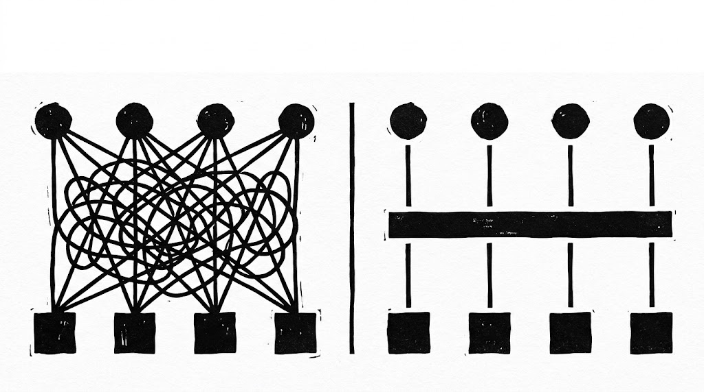

吵最兇的那兩邊其實比錯東西了。而且有一件事八成的人都搞反：你的模型，從頭到尾沒有自己執行過任何一次 API 呼叫，一次都沒有。只要搞懂「誰在執行」，MCP 是什麼、值不值得用，答案就會自己浮出來。
先把這篇要回答的問題排好：MCP 到底是什麼、它會不會取代 API、以及最現實的那一個，我到底該不該用。前半段是大方向，後半段才是真正決定你會不會踩坑的那一層細節。我們從一個大家都熟的東西開始。
01API 為什麼撐不住模型▶ 0:55
過去幾十年，API 就是系統跟系統之間的握手：你定義一個 endpoint，送一個請求，拿回一個回應。乾淨、可預測，對傳統軟體來說完美到不行。
問題是大型語言模型進場之後遊戲變了。模型不會只呼叫一個 endpoint，它可能要串十個、把結果接起來，還要看懂一堆亂七八糟的非結構化資料，然後回頭再問你一句。
更麻煩的是這個假設：API 假設呼叫它的是另一支程式，而那支程式的作者早就翻過文件、知道每個欄位長什麼樣。但模型不是那樣進來的。它帶著一個模糊的目標進來，例如「把這張工單處理掉」，至於要打哪一支、參數怎麼填，得自己想辦法。
02MCP 翻轉了哪個假設▶ 2:07
所以在 MCP 出現以前，這個「不知道要開哪個抽屜」的問題是誰在解決？是你。是你在 prompt 裡面一條一條寫給它聽：要開工單就打這個網址、帶這幾個欄位；要回信就用這個格式。寫完還要祈禱它每次都照做。這件事我們做了兩年，做到麻痺，還以為這就是 prompt engineering 的日常。
MCP 想拆掉的就是這件事：與其讓你把工具的說明背進 prompt 裡，不如讓工具自己開口說明自己。模型不再需要被人工教會每一個 endpoint，而是有一個標準化的方式去發現一個工具能做什麼、要吃什麼輸入、會吐什麼輸出。你可以把它想成：給模型一張活的、機器讀得懂的地圖，而不是一本靜態的說明書。
影片接了一個很好的例子把這件事講具體▶ 3:12：你要做一個處理客服工單的 AI 代理，它要能碰 Gmail、Notion、Jira 三個服務。如果是今天的做法，你要寫多少東西？三套認證、三套錯誤處理、分頁、速率限制，全部各寫一次；然後再寫一大段 prompt 教模型什麼時候該呼叫哪一個。
而最花時間的其實不是第一次接通，是後面那兩年：Gmail 改了授權流程、Jira 換了欄位名字，每一次都要有人回去改那三套程式碼。這才是真正的成本。
03MCP 實際在做的三件事▶ 4:35
「讓服務自己說明自己」聽起來還是有點像行銷文案。它實際上到底做了什麼？IBM 那支白板課講得最務實，就三件：抽象化（把你的服務 API 抽象成模型讀得懂的格式）、認證（讓你的代理能夠去呼叫那個服務）、限定權限（給的是一個範圍限定的 token，讀寫權限你自己決定）。
中間那個「認證」值得特別拉出來講，因為它常常被跳過，但它其實是三個裡面最重要的。理由是這樣：如果只是要「讓模型知道有哪些工具」，那你把 API 文件貼進 prompt 也做得到。真正做不到的是權限：誰拿著金鑰、誰決定這個代理只能讀不能寫、誰負責在它想刪東西的時候擋下來。
權限這件事不可能靠寫 prompt 解決，它必須有一層真的程式在那裡守著。記住這個「有一層程式在那裡」的感覺，後面整段都靠它。
04疊在上面，不是取代▶ 6:26
那 MCP 是要來取代 API 的嗎？Google 和 IBM 這兩支教學講的完全一致，而且都講得很清楚：不是。
MCP 不會取代你的後端。它取代的是模型跟 API 之間的那層 middleware。MCP server 像一個翻譯，把你現有的 API 轉成模型能自動理解的格式。你的 API 一行都不用動，它還在原地做它本來就在做的事，MCP server 只是站在它前面。
所以「MCP vs API」這個題目本身就是錯的，它們根本不在同一層。到這裡，大方向的故事講完了，乾淨、漂亮、而且完全正確。接下來是這兩支教學沒有展開的那一半。
05最大的誤會：沒人告訴你的執行層▶ 7:29
回到開場那句話：模型從來沒有自己執行過任何一次 API 呼叫。這聽起來跟你剛剛看到的畫面有點衝突，教學影片裡會說「模型連上 server、直接呼叫這些功能」，那是在講架構，講得沒錯。但如果你照字面去想像，你腦中的圖會是：模型長出了手，自己伸出去打 API。不是這樣。
真正發生的事情是：你的應用程式先告訴模型「你現在可以做這些事」，模型讀完狀況之後，輸出一段請求，例如「請呼叫建立工單，標題是付款失敗，優先級高」。到這一步為止，什麼事都還沒發生，模型只是產生了一段輸出。真正拿著這段輸出去打 API 的，是模型外面那一層程式。這一層有個名字，叫執行層。
而 IBM 那段畫面其實已經把答案講出來了：它說的是「告訴模型去產生一個特定的 JSON 請求」。產生，不是呼叫。翻成真正的 HTTP 請求去打的，是 MCP server。
這件事為什麼重要？因為一旦你想通了，下一個問題的答案就會自己浮出來：那 MCP 到底給了模型什麼新能力？答案是，沒有。而這個「沒有」，恰恰就是它真正價值的起點。
06價值是一道算術題：乘法變加法▶ 9:16
如果 MCP 沒有給模型新能力，那它憑什麼被講成革命？因為它給的不是能力，是標準。而標準的價值，是一道算術題。
假設你們公司有一個 AI 應用，要接十個服務：Slack、Gmail、Jira、Notion、自家資料庫，還有五個雜七雜八的。這樣是十份整合程式碼，每一份都要有人寫、有人維護。隔年老闆說要做第二個 AI 應用，客服機器人，要接的是同一批十個服務。你的團隊怎麼做？再寫十份。兩個應用乘十個服務，二十份。第三個應用進來，三十份。
換成 MCP：每個應用配一組接線，每個服務配一台 server。兩個應用加十個服務，十二個零件。而真正的差別在第三個應用，它不用再寫十份，直接重用那十台 server。
- 2 應用 × 10 服務 ＝ 20 份整合程式碼
- 第 3 個應用進來，再加 10 份
- 服務改版時，每一份都要有人回去改
- 2 應用 ＋ 10 服務 ＝ 12 個零件
- 第 3 個應用直接重用那 10 台 server
- 服務改版只改那一台 server，全部應用受惠

各自接 API：M×N 條線，每條都要維護 走 MCP：M＋N，改版只改那一台07三種情況，不要用 MCP▶ 10:26
講到這裡你可能以為要開始推坑了，剛好相反。
第一種，確定性流程。收到款項就寫一筆進資料庫，這件事每次都走同一條路，永遠呼叫同一個 endpoint。你放一個 AI 進去決定要做什麼，只是多引入一個它偶爾會選錯的機會。這種流程直接接 API 就好。
第二種，一次性任務，或你只有一個應用。你已經知道要打哪幾支 API，直接接完全合理。很多團隊到今天都跑得又穩又安全，一台 MCP server 都沒有。
第三種，沒有現成的 server，或現成那台沒有你要的動作。那你等於是為了一個標準，自己去蓋一台伺服器。
影片也很誠實地講了 MCP 自己還沒解完的問題：採用度（要整個生態系的 server、client、工具都同意用同一套標準）、安全與控制權（你不會希望模型不小心寄出一封信、刪掉一個檔案，或動了不該動的資料庫），以及context 成本（如果你把每一台 server 的每一個動作全部載進去，光是那份清單就先把 context 吃掉一半）。還有金鑰：API key 絕對不能讓模型看到，它應該只存在執行層裡。
08決策三問：你該不該用▶ 12:03
影片把它濃縮成三個問題，你自己回答就會有答案。
09補充：執行層其實是三層
這一節以下的內容對照 modelcontextprotocol.io 官方規格（協定版本 2026-07-28）查證過，用來補影片講得不夠精確或不夠深的地方。
影片說「MCP server 把模型的輸出翻譯成 POST 或 GET 請求」。方向是對的，但中間跳掉了兩步，而那兩步剛好是你日常會碰到的。官方規格把角色分成三個：
- Host：AI 應用本體，例如 Claude Code、Claude Desktop、VS Code。它跑主迴圈，決定要不要派工。
- Client：Host 為每一台 server 各開一個，一對一維持連線。你不用自己寫，SDK 幫你開。
- Server：真正提供能力的程式。可以跑在你本機，也可以是遠端服務。
還有一件比影片更根本的事：執行層不是 MCP 帶來的。任何工具呼叫都是這個結構，模型產生請求、外面的程式執行。MCP 只是把「Client 到 Server 那一段」標準化成 JSON-RPC。所以影片那句「下次誰跟你吵就拿這句出來」，其實講的是工具呼叫的通則，不是 MCP 獨有的洞見。知道這一點的好處是：你看任何 AI 工具都能問對同一組問題，金鑰在誰手上、誰負責重試、誰能擋下不該做的動作。
10補充：三個影片沒講的
第一，「一個新能力都沒給」這句話太滿。「給的是標準不是能力」框架是對的，但講成一個都沒有會漏掉一件實質的東西：執行期發現。模型可以在對話中途知道有哪些工具可用、每個吃什麼參數，而不用在系統提示詞裡預先寫死。在「工具會變」的情境下，這是靠 prompt 做不到的。另外，MCP server 能提供的也不只是工具，官方定義了三種：Tools（可執行的動作）、Resources（唯讀的資料來源，例如資料庫 schema）、Prompts（可重用的互動範本）。影片從頭到尾只講了 Tools。
第二，決策三問漏了第四問：這台 server 是誰寫的，你信不信。這一問在「有現成的 server，成本幾乎是零，試一下沒損失」後面特別重要，因為那句話只有在你信任那台 server 的前提下才成立。官方的安全文件把這件事列成一個獨立的攻擊類別，叫 Local MCP Server Compromise：本機 MCP server 是下載到你電腦上執行的二進位檔，它跟你的 client 用同樣的權限跑，可以讀你的檔案。規格文件裡舉的例子直白到有點嚇人，一行藏在啟動指令裡的指令就能把你的 SSH 私鑰送出去。
裝一台 MCP server 的信任等級，應該跟裝一個第三方套件一樣，而不是跟改一個設定一樣。官方文件另外還列了幾種攻擊：混淆代理人、token 被轉手到下游、惡意 server 給一個指向內網的網址騙 client 去打。這些是寫給 server 開發者看的，你當使用者不用細究，但知道有這些事在發生，比較好判斷該不該信一台 server。
第三，MCP 跟 Skill 不是二選一。影片引用了 IBM 那支〈MCP vs Skills〉但完全沒展開，而這題其實很實用。
- 給的是「怎麼做」的知識與判斷
- 不用跑任何東西，讀進去就生效
- 成本是 context，可以漸進載入
- 給的是「能做什麼」的可呼叫介面
- 要有一台 server 真的在跑
- 成本是 context 加上維護一台服務
—怎麼用在你身上
- 你現在裝了八台 MCP server，context 成本是真的：影片提了一句「工具清單先吃掉一半 context」卻沒接回那道算術。加法省的是維護成本，但每多一台 server，每次對話的固定開銷就多一份工具清單。這是「開場就覺得慢、額度掉得快」的一個具體來源，值得回頭盤一次哪幾台其實很少用。
- 第四問接上你既有的安裝流程：你裝第三方 skill 前會先跑重複檢查加安全審核。MCP server 應該套同一道關卡，而不是更鬆，因為 server 是真的在你機器上跑的程式，skill 只是文字。
- Skill vs MCP 那條界線你其實已經走對了：管判斷與流程的東西寫成 skill，要碰外部世界的（瀏覽器自動化、網頁抓取、檔案讀寫、查文件）走 MCP。這篇只是給了你一句話講清楚為什麼，之後遇到「這個能力該做成哪一種」就不用每次重想。
- 下次評估任何 AI 工具都能用同一組問題：金鑰在誰手上、誰負責重試、誰能在它想做危險動作時擋下來。這組問題跟 MCP 無關，是工具呼叫的通則，套在任何自動化上都成立。